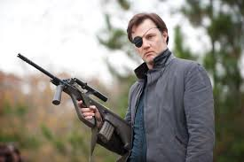

Rick Grimes
El líder del grupo y protagonista. Un ex policía que lucha constantemente por proteger a los suyos, aunque eso lo lleve a decisiones cada vez más oscuras.
"The Walking Dead" es una serie postapocalíptica que sigue a un grupo de personas intentando sobrevivir en un mundo invadido por zombis, conocidos como caminantes. Más allá de los horrores del apocalipsis, la serie profundiza en la psicología humana, el liderazgo, la traición y la lucha constante por mantener la humanidad.
Actualmente puede verse en plataformas como Disney+, Claro Video y Netflix. Aunque tiene momentos intensos y buenas actuaciones, su extensión y ritmo pueden no ser del gusto de todos.
El líder del grupo y protagonista. Un ex policía que lucha constantemente por proteger a los suyos, aunque eso lo lleve a decisiones cada vez más oscuras.
Experto en rastreo y uso de la ballesta. Leal a Rick, es uno de los supervivientes más habilidosos y queridos por los fans.
Guerrera solitaria que se une al grupo. Su arma principal es una katana y se convierte en una figura esencial, además del interés amoroso de Rick.
De víctima a superviviente feroz. Carol demuestra una evolución sorprendente, siendo capaz de decisiones difíciles por el bien del grupo.
Astuto, rápido y valiente. Glenn pasó de ser un repartidor de pizza a un miembro clave del grupo. Su historia de amor con Maggie fue muy emotiva.
Valiente y decidida. Maggie crece como líder y madre, especialmente tras la tragedia con Glenn. Representa la esperanza y resistencia.

Líder carismático y despiadado de Los Salvadores. Su llegada marca un punto de quiebre en la historia, redefiniendo las reglas del juego.
Ex compañero y mejor amigo de Rick. Su conflicto con Rick por el liderazgo y Lori crea una de las tensiones más importantes en las primeras temporadas.
Hijo de Rick. Su crecimiento en un mundo sin infancia lo lleva a transformarse en un joven endurecido, pero con ideales propios.

Líder de Woodbury. Aparece como un pacificador, pero es un psicópata manipulador y controlador, capaz de todo para mantener su poder.
Le doy un 3/10. Aunque tiene momentos memorables y una buena ambientación, la serie se alarga demasiado y a veces se vuelve inconclusa. Si sos fan del mundo zombi, puede gustarte; si solo buscás terror, no es lo más recomendable.